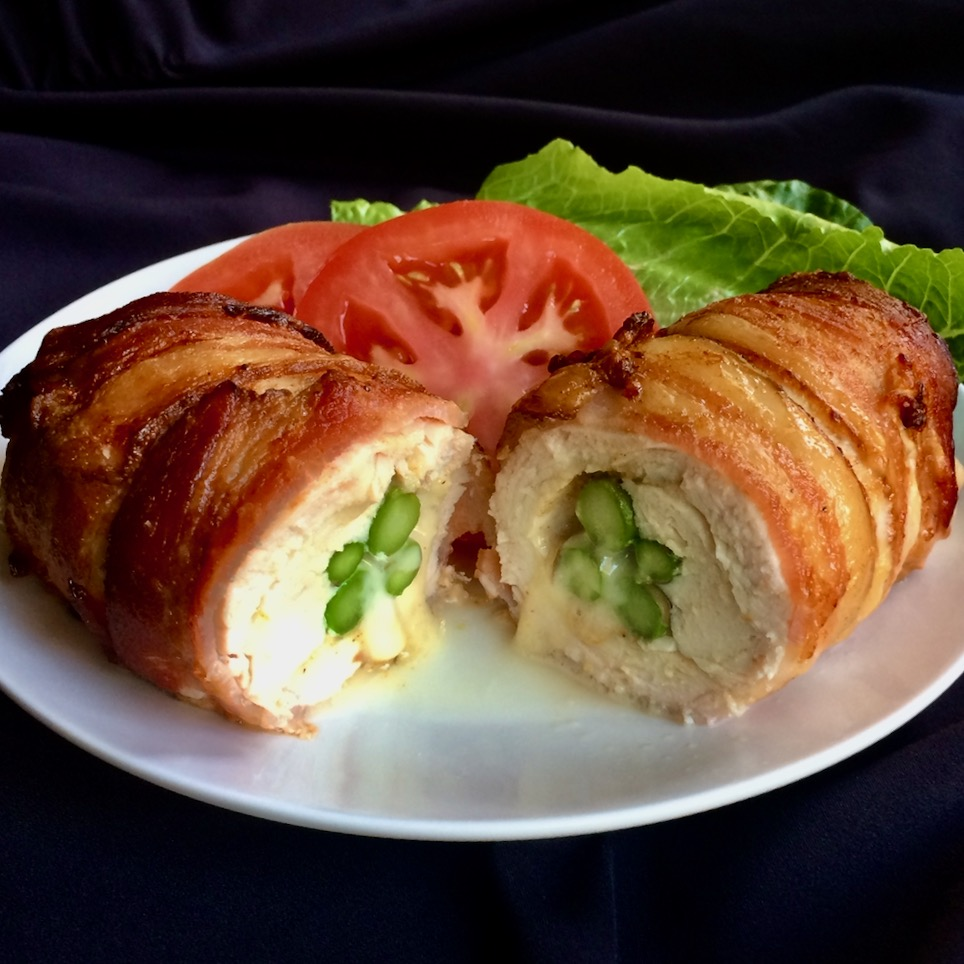

Bacon-Wrapped Stuffed Chicken Breasts in the Air Fryer

Lasagna is a wide, flat sheet of pasta. Lasagna can refer to
either the type of noodle or to the typical lasagna dish which
is a dish made with several layers of lasagna sheets with sauce
and other ingredients, such as meats and cheese, in between the
lasagna noodles.
ingredients
- 3 breast half, bone and skin removed (blank)s skinless, boneless chicken breasts
- 1 teaspoon lemon-pepper seasoning, or to taste
- 3 slices Monterey Jack cheese
- 6 spears fresh asparagus
- 9 slices bacon
- 12 each wooden toothpicks
- Step 1: Preheat the air fryer to 350 degrees F (175 degrees C) if recommended by manufacturer.
- Step 2: Pat chicken pieces dry with paper towels. Use a sharp knife slice horizontally through the middle, beginning at the thickest part, being careful not to cut all the way through to the other side. Open the 2 sides and spread them out like an open book.
- Step 3: Season both sides with lemon-pepper seasoning. Place 1 slice of cheese on each chicken breast. Cut asparagus spears in half and place 4 halves on top of the cheese. Roll the chicken up and over the cheese and asparagus, keeping the stuffing inside each roll. Wrap each chicken breast with 3 pieces of bacon, using wooden toothpicks to secure the bacon, where it overlaps.
- Step 4: Place each bacon-wrapped breast in the air fryer basket and air fry for 15 minutes. Turn and cook for 15 minutes more. Test chicken for doneness; an instant-read thermometer inserted into the center should reach 165 degrees F (74 degrees C).